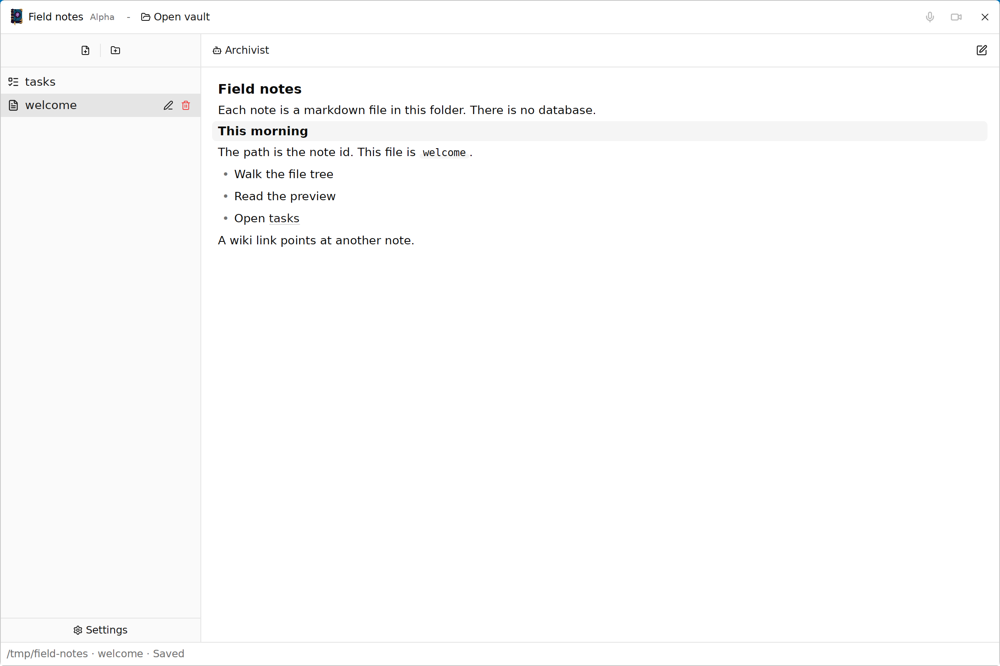
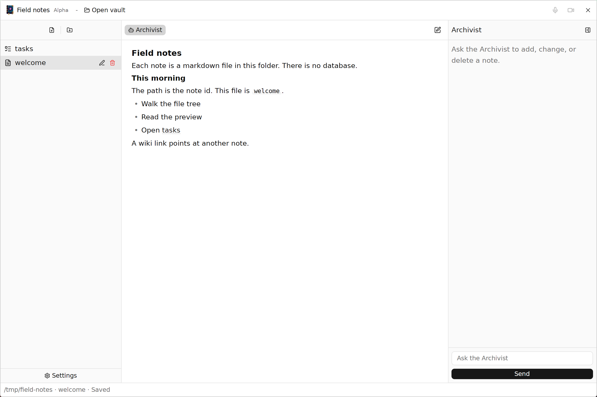

Markdown notes in a folder.
The notes stay simple. Use an agent for almost every change.
Runebook is a second brain that organizes itself. That part is not built. Basic notes work. The published binary is Linux x86_64.
Pull requests are welcome.

What works
- Book
- A markdown file with no kind header. Preview and source.
- Speech
- A transcript. Voice goes to Groq. The audio file is not kept.
- Sight
- A screen recording. The mp4 sits beside the note.
- Deed
- A task list. A preview checkbox writes that line.
- Research
- A question, a plan, then an investigation.
- Archivist
- A column that can add, change, or delete a note.
- Links
[[note]]points at a note id.
